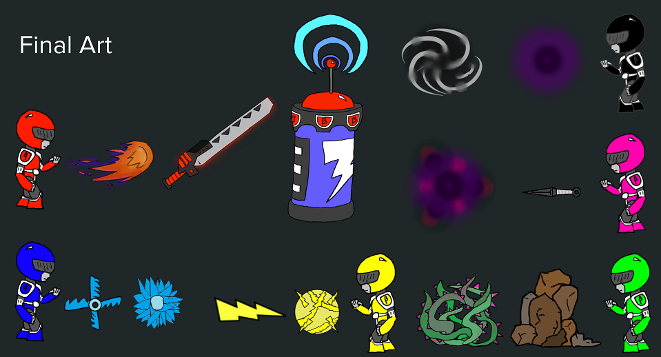
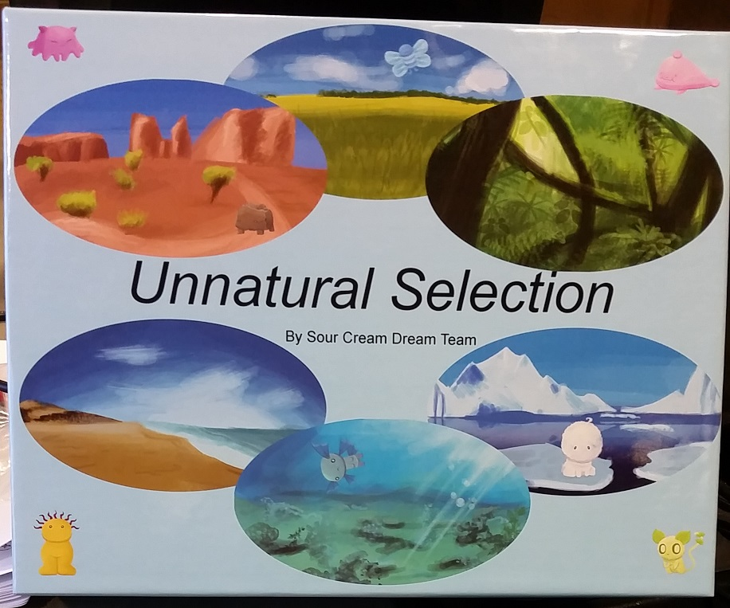
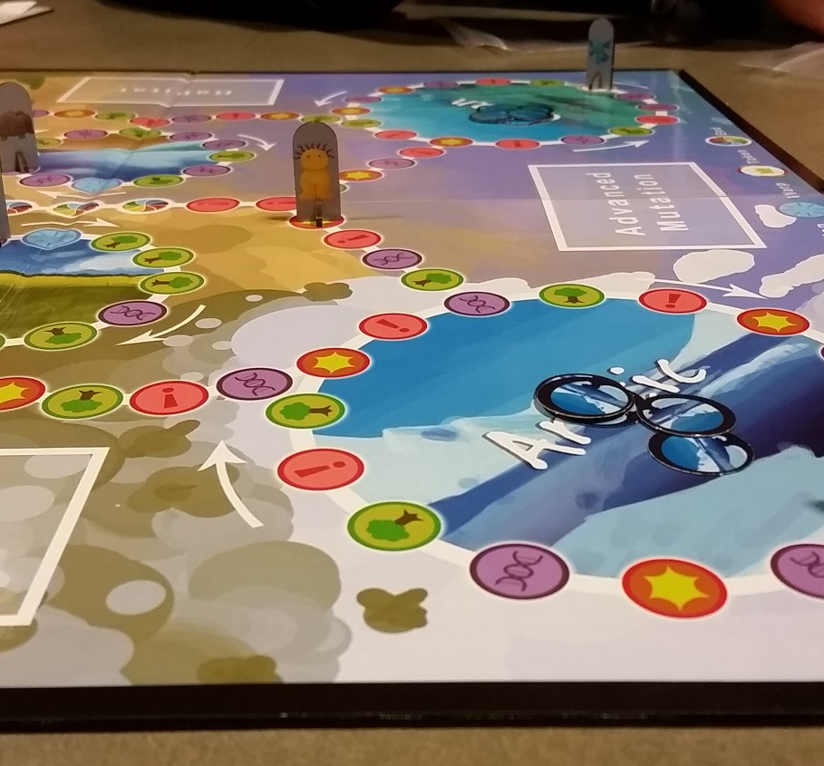
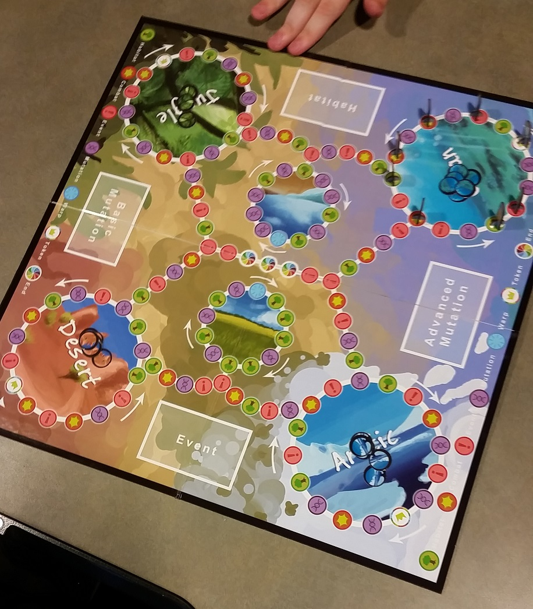

Group Project:
Beta Rangers
Beta Rangers
A 4-player, PvP brawler, where you take the role of a Beta Ranger as you try to fight your fellow rangers. Fighting over the only battery, you along with the other rangers must try to charge your piece of the mech to win. Each ranger has their own powers and skills that they can use to fight the other rangers.
This game is a 5 week project, made in Unity, during my third year of college for my 'Game Design & Development II' class. It was co-created by Danielle Carmi, Joshua Malmquist, Robert Santiago, and myself.
What I Did For This Project
 I was the manager and production lead for Beta Rangers. I made sure that the other three members of the team completed their work on time as well as determined what direction the project should primarily take. I also coded some of the project when there was too much work for the three others. In this area I programmed the black and pink rangers, as well as the battery and goal system.Github Repository
https://github.com/Josh9309/Beta-Rangers
Group Project:
Pulp Legends
Pulp Legends
Pulp Legends is a 2D couch co-op, side scrolling, platformer set in the Noir/Pulp Fiction Universe. You play as Detectives with odd powers who must work together in order to solve the murder of the police chief. Traverse dark alleys, abandoned factories and the seedy underground of New Pulp and bring justice to the city once again.
This game is a 5 week project, made in Unity, during my third year of college for my 'Game Design & Development II' class. It was co-created by Anna Karwacki, Joshua Malmquist, Jason Noone, and myself.
This project has thought me a lot more about teamwork and organization in a project. As a team we stay in constant communication as well as make sure we are getting our work done on time that we as a team decide. This is currently the biggest video game that I have worked on.
What I Did For This Project
For this project I am Lead Programmer. I worked on the code for the world controller, enemies, camera controls, and Pulp Powers. I also delegated other pieces of code like the player class, basic objects, menu controls, and character selection to other members of the team.Download Pulp Legends
Github Repository
https://github.com/Creative-Corner-Studios/Pulp-Legends
Other Group Projects
Unnatural Selection
Unnatural Selection
It the survival of the weirdest. This project was created in my second year of college by 5 other people and myself in our 'Game Design & Development I' class. It is a board based around the idea of evolution, adaptations, and mutations.
This game is a three to eight player evolution-themed board game that focuses on using creature abilities, movement, attacking, and defending in order to get certain cards that trigger events, cause mutations in the player's creature, or give the player special adaptability in certain habitats on the board. The adaptability gives the players the chance to obtain habitat tokens; once a player gets four zone tokens and reach the end zone they win the game.
The three initial ideas were a game based solely on random environment changes and the ability to adapt to them, a game that was based on achieving adaptability to different zones on one mainland, where each subsequent zone was more difficult to adapt to, and our current game. We picked our current idea because it allowed for more player interaction than the other two and was easier to add certain aspects of the other two ideas without totally changing the game.
What I Did For This Project
I was the main rule maker for this project. I had to make all the rules that the players abided by, and also fixed any loopholes that were in the game. This challenged me to make the rules specific but also make it easy for players to read and understand.
Download Unnatural Selection's Design Document
Feed the Masses
Feed The Masses
This project is a tower defense game that was co-created by Josh McMahan, Alia Gestl, and myself in my first year of college for our 10 week project in your 'Game Dev & Algo Prob Solve II' class.
The project was our first major group that we had to do for class. It taught about working as a group and how to keep code in order while multiple people are writing it. It also made each member problem solve so that we could reach each milestone. Finally it also taught us how to manage time in a big project over many weeks so that we can meet deadlines.
In the realm of programming, I gained several skills from the project. One skill I learned was how to use trigonometry, pi, and other things related to those things in code and make them work. Another thing that I learned was how to fix bugs in a reasonable amount of time. Something that I learned was that "code is dumb", this means that code can be very annoying and bad, but it can also be very useful if implemented correctly.